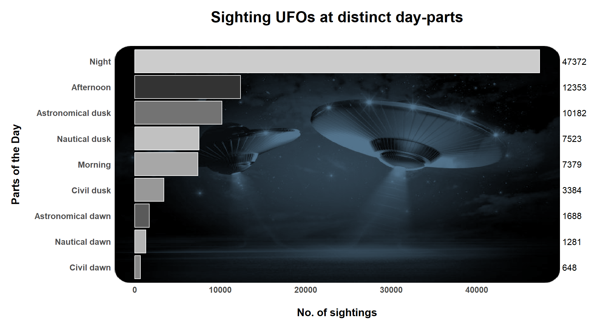

Alien Encounters 🛸
Visualizing UFO Sightings
Abstract
The present work delves into the fascinating world of UFO sightings, leveraging a comprehensive dataset featuring details on reported encounters with unidentified flying objects. Sourced from the TidyTuesday project, this dataset compiles UFO sighting reports spanning different times, locations, and attributes. The analysis focuses on uncovering intriguing insights into the patterns and characteristics of UFO sightings. The report commences by offering a concise dataset description, emphasizing its provenance and dimensions.
The project explores the temporal aspect of UFO sightings, tracking trends over the years. An in-depth look into diurnal patterns during particular years adds to the comprehensive examination. Ultimately, this report serves as an entry point into the world of UFO sightings, offering data enthusiasts, researchers, and the general public an opportunity to unravel the mysteries of these unexplained phenomena. Its focus on data-driven analysis and visualization provides a foundation for ongoing investigations into the extraordinary and enigmatic realm of UFO encounters.
Introduction
Unidentified Flying Objects (UFOs) have long captured our collective imagination, inspiring countless stories, debates, and questions about the unknown. In this era of data-driven exploration, we have a unique opportunity to delve into the world of UFO sightings using a comprehensive dataset. The UFO sightings Dataset was taken from the TidyTuesday project. This dataset compiles a treasure trove of reports, encompassing not just descriptions of UFO encounters, but also their temporal, spatial, and qualitative dimensions. Our journey through this dataset begins with an exploration of its provenance and dimensions, setting the stage for a systematic analysis aimed at unraveling the mysteries of UFO sightings. Through this report, we embark on an intellectual adventure to reveal the temporal and spatial patterns, examine correlations, and open the door to a world where the unexplained meets data-driven discovery.
Question 1: What are the number of UFO encounters globally?
Introduction
For the first question, we want to visualize the number of UFO sightings that have been reported in various global locations. The unexplained aerial phenomena are encountered frequently across different region of the world. Many scholars and enthusiasts are interested in these encounters in an effort to find any patterns or possible explanations. Here, we want to explore the geographical patterns and hotspots of UFO activity.
For the second part of the question, we have used circular packing to hierarchically visualize the number of sightings in each cities across the continents. Here, the outermost circle shows the continent name and inner circles display the number of sightings recorded in each country. We tried to identify fascinating trends and patterns which will help us in understanding the global mystery surrounding UFO sightings.
Approach
Initially the dataset was loaded from the “TidyTuesday” source using the read.csv function in R. The date and location columns were verified to ensure that they are in the correct data types. The unique values and frequency distributions of key variables, particularly reported_date_time, city, state, and country_code were studied. Relevant date and location information from the dataset, which includes reported_date_time, city, state, and country_code were extracted. To visualize the global distribution of UFO sightings, a geographical plot was drawn. Bubble map was plotted making use of the longitude and latitude information of the values city, state, and country_code variables.Bubble maps can simultaneously display both the geographical locations of UFO sightings and how their frequency has changed over time. Each bubble could represent a specific location and the number of sightings in that location.
After arranging the distribution of UFO sightings geographically, we thought it will be interesting to know the frequency of mysterious UFO sightings in each country globally. Initially, we decided to plot geom_treemap for hierarchical visualization of the number of sightings in each city across the continents. However, we employed circular packing to make the story more readable and easier to follow. To get to our final result, the assignment of continents to countries based on their country code is performed. Then, to make it easier for the readers to read and comprehend the story, each country’s complete name is thoroughly provided. The count of the UFO sightings for each country determines the occurence rate of the incidents. For creating a circular packing for visualization of UFO sighting data, a new column patching is created in the dataset which specifies the structure of the circular plot. It is constructed with the varibales region, country_code, full_countryname & country_ufo_sighting from country_count dataset. The next step converts the dataset to hierarchical data structure with the help of as.Node() function. The plot is generated by using circlepackeR, with size defining the area of the circles. Suitable color range and width of the circle has been defined. The title is added to the plot using HTML formatting.
Analysis
Discussion
The bubble map uses the colored bubbles to represent data points on a geographical map. The bubbles speaks for a specific sighting, and its placement on the map. This helps to pin down where these events have happened. On clicking on the bubble, it provides a detailed information on country_code, country name, state_name and the count of the total number of sightings in that specific state. We considered the latitude and longitude values to spot these locations more accurately. For the second part of the question, we have used circular packing to hierarchically visualize the number of sightings in each cities across the continents. Here, the outermost circle shows the continent name and inner circles displays the number of sightings recorded in each countries. We tried to identify fascianting trends and patterns which will help us in understanding the global mystery surrounding UFO sightings.
The plot shows a hierarchical structure. The outer circle represents the continents. The inner bubbles inside the continents show country-code for individual countries. Upon interaction, it displays the country name with total number of UFO sightings recorded in that city.This enables viewers to access specific data about sightings in each country, which further benefits in quick and intuitive comparison of UFO sighting frequencies across each regions and countries. The region or cities having larger circles indicate a higher volume of sightings, while smaller circles tell us there are fewer occurrences. This gives a profound understanding of the data’s geographical pattern with highest and lowest UFO sighting counts. For instance, here the region North America or the country US has notably larger number of sightings than other places, which aligns with the popular association of North America and US with UFO sightings. Finally, it enables viewers to understand the relative frequency of UFO encounters immediately and makes it easier to conduct thorough investigations at both the regional and national levels.
Question 2:
Introduction
Approach
Analysis

Discussion
Further, the day_part column was considered to understand the pattern of UFO sightings accross different parts of the day.
The following image represents the types of twilight that may be helpful in understanding the plot in a better way.

The bar chart depicts the number of UFO sightings reported during different parts of the day. The y-axis represents the various segments of the day, categorized into nine distinct periods viz. Night, Afternoon, Astronomical dusk, Nautical dusk, Morning, Civil dusk, Astronomical dawn, Nautical dawn, and Civil dawn. The y-axis represents the number of UFO sightings reported for each of these day-parts.
From the above image, it is clear that the parts of the twilight between night-day and day-night are called dawn and dusk respectively.
The chart reveals that the highest number of UFO sightings, reaching a staggering 47,372, during the night. This is followed by a significant drop in sightings during the afternoon, with 12,353 reports. Astronomical dusk and nautical dusk witness a further decline in sightings, with 10,182 and 7,523 sightings respectively. Morning records a slightly less number of sightings compared to nautical dusk, with 7,379 reports. Civil dusk, astronomical dawn, and nautical dawn witness a consistent decrease in sightings, with 3,384, 1,688, and 1,281 reports, respectively. The lowest number of UFO sightings, a mere 648 reports, occurs during civil dawn.
Overall, the chart highlights a clear pattern of UFO sightings being predominantly reported during the night, with a decrease in sightings as the day progresses towards dawn. This suggests that darkness or reduced visibility might play a role in the increased frequency of UFO sightings during nighttime.